Understanding the User Interface
Accessing the AI-on-demand Platform through the EU login
To fully benefit from the platform’s services, such as the Experimentation service or to add content to the platform through the Collaboration, page you must log on to the platform with the EU login, which is the European Commission’s single sign-on user authentication service. Using the Experiments service as an authenticated user, for example, allows you to upload AI resources such as data or models and create your own AI solutions. The EU login allows you to access to a wide range of web services, using a single email address and password. The EU login is manufacturer-independent and has more than 6 million active users from the European Commission, EU institutions and agencies as well as external users. It is quick and easy to create an EU login account. Alternatively, you can gain access via selected social media accounts.
If you already possess a login for the platform, we recommend using the same email address for the new EU login procedure. Your email address serves as identifier to seamlessly map your account. In this way, you can get a quick overview of your past contributions, such as the resources you already uploaded.
To sign in to the platform follow these simple steps:
- If you do not already have an EU login you may create an account here
- 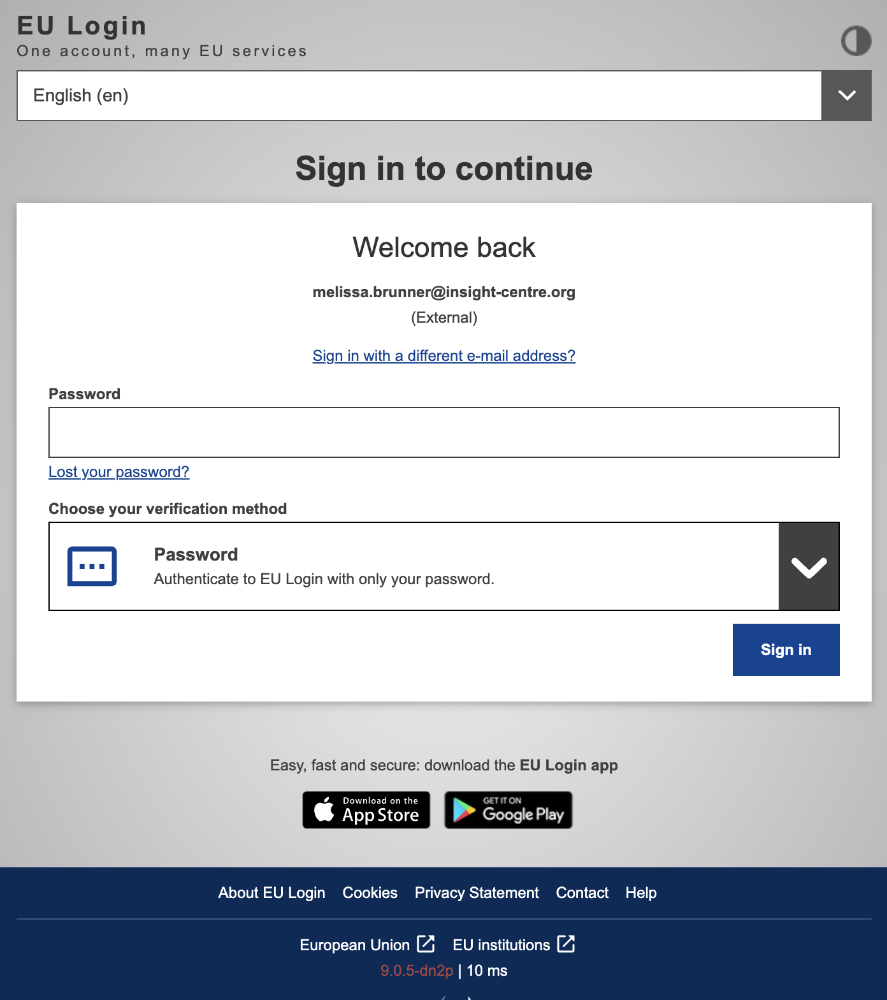
- Click on the symbol with the arrow in the top right corner on the AI on demand
- 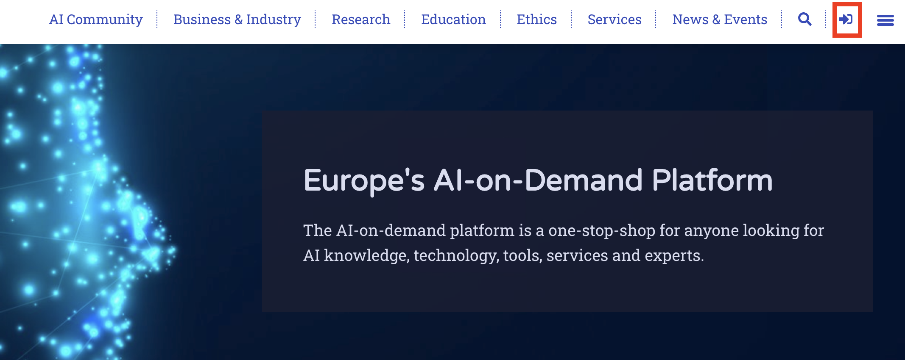
Click on the blue EU Login button
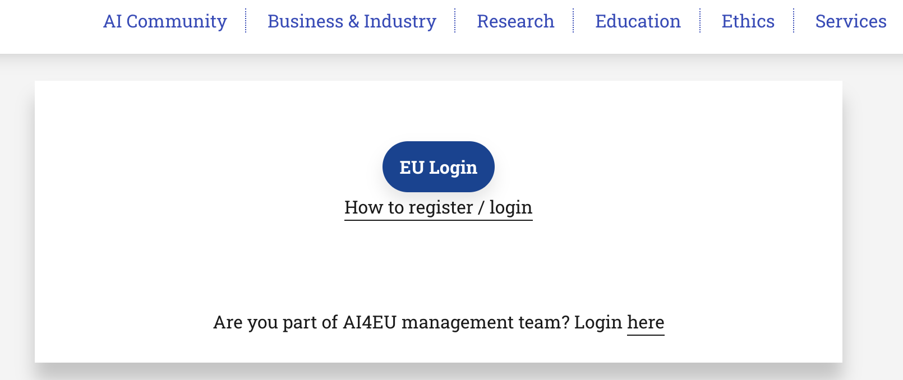
Sign in using your AI login
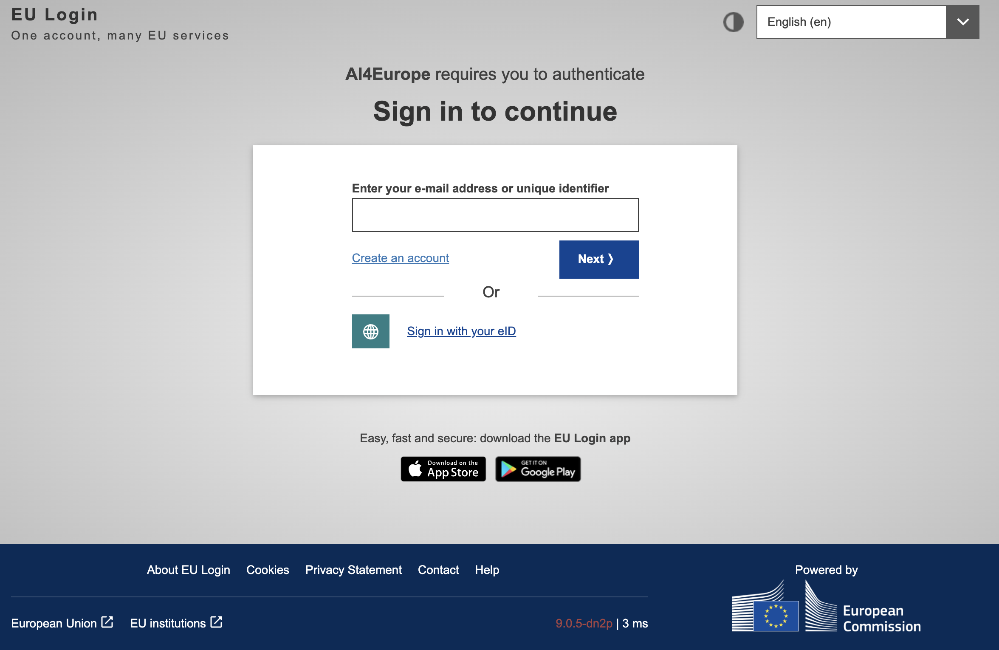
Once you are logged in you can click on the person icon in the top right corner to see your content and account details
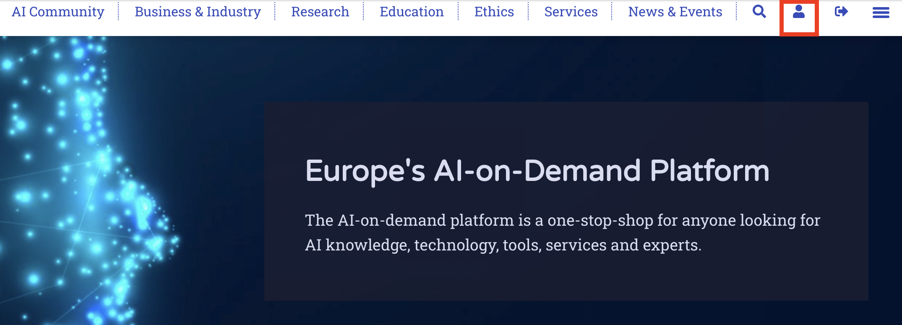
You will then find an overview of the content you have created along with its moderation state (e.g. published or under review) and an option to submit new content
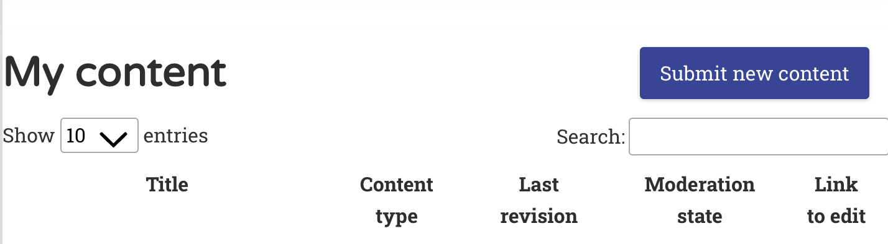
How to add content to the platform
To be able to add content to the platform you must log in using your EU login. Go to the Collaboration where you can select what type of content you would like to add, ranging from news and events to case studies.
Watch this video-tutorial on how to contribute your own contents.
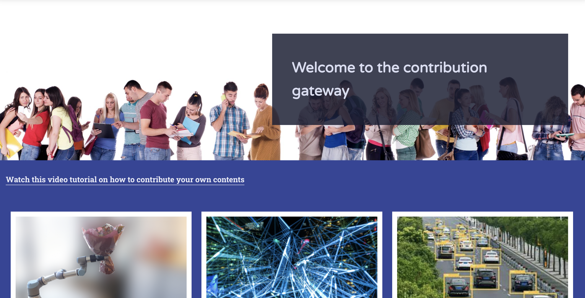 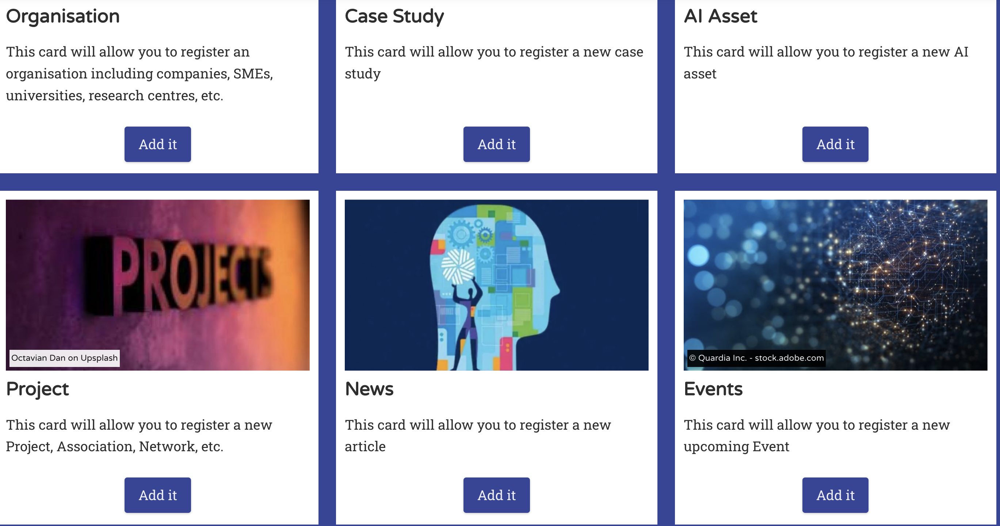 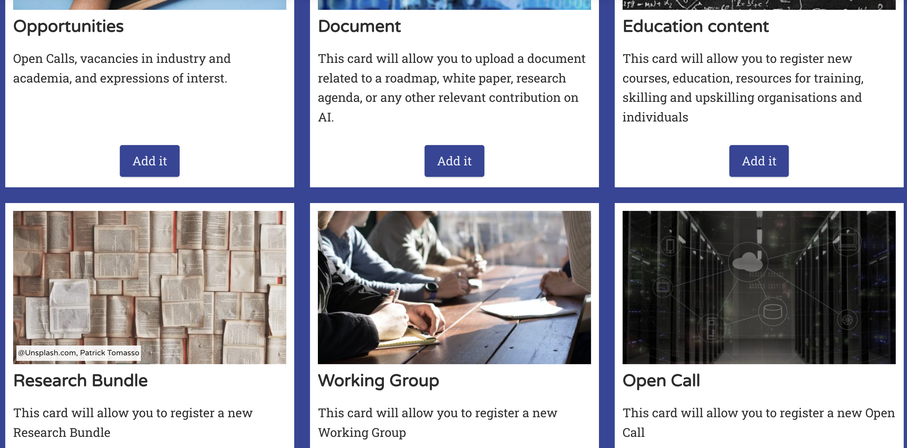{kind=link}
{kind=link}
{kind=link}
This collaboration page is accessible through seven of the main pages, Home, AI Community, Business and Industry, Research, Education, Ethics, and News and Events.
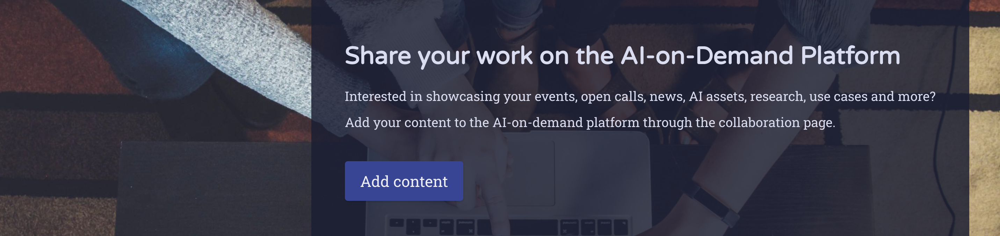{kind=link}
Running example of adding a news item to the platform
Chose through the Collaboration page the news item and click on add it button.
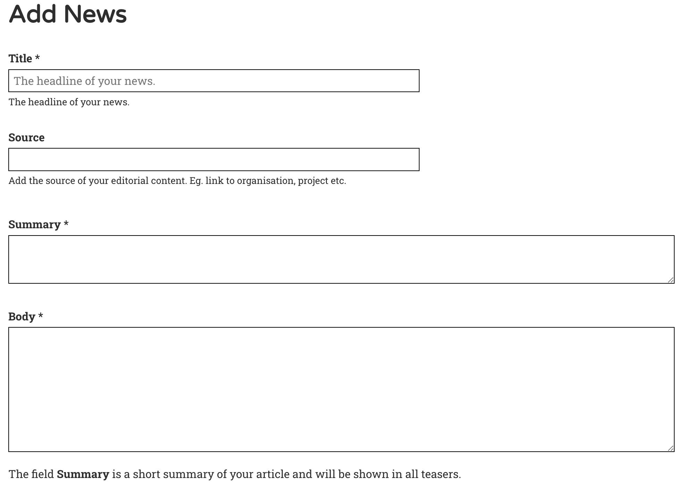{kind=link}
You can then add media (e.g. an image) and select the category and business category the content falls under to link your content to the relevant pages.
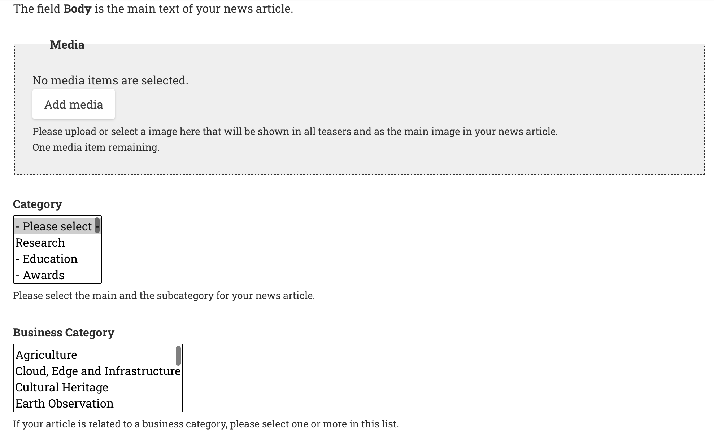{kind=link}
Once you have inputted all the necessary information you can then click on save. After you have submitted your content, it will go through a review process before it can be published.
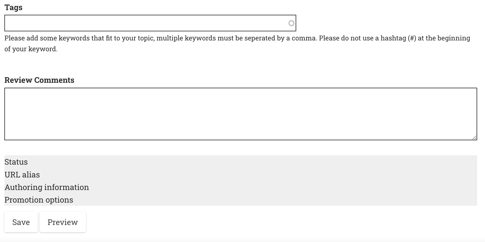{kind=link}
To view if your content has been published you may check your content in your account (see step 5 and 6 of Accessing the AI-on-demand Platform through the EU login).